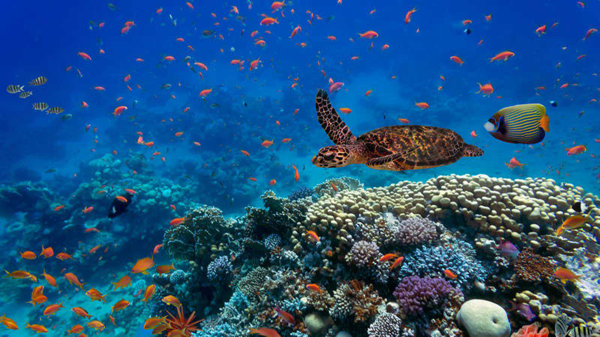

El desafío de sobrevivir en los ecosistemas marinos
Los ecosistemas marinos albergan el 70% de la superficie de la tierra e incluyen sistemas cercanos a las costas. Los animales y vida marina que albergan se ven sumamente afectados por los residuos plásticos que son arrojados día a día. Vivir en estos se torna un desafío donde perecen o se adaptan de una forma u otra. Por ejemplo, se han visto avistamientos octópodos que, en vez de recurrir a conchas marinas para su protección, utilizan plásticos que atentan contra su vida como en el vídeo que vemos a continuación.
En dicho vídeo filmado en Lembeh, Indonesia. Capturado por el equipo de Pall Sigurdsson, se muestra a un joven Anfioctupus marginatus o pulpo de coco que ha hecho de su hogar un vaso de plástico. En la descripción del vídeo el equipo de Pall explica que lo salvaron de un destino cruel y que, además, un depredador como la anguila probablemente se tragaría el vaso con el pulpo dentro, lo que mataría a ambos. “Encontramos este pulpo en particular, intentamos durante mucho tiempo darle conchas con la esperanza de que cambiara la concha. Los pulpos de coco son famosos por ser muy exigentes con las conchas que guardan, por lo que tuvimos que probar con muchas conchas diferentes antes de encontrar una aceptable” Explica Pall. Más de 600 especies de f auna marina, entre ellas las más queridas del planeta, se ven afectadas por la basura que llega al mar. Desde las majestuosas ballenas, delfines, focas y tortugas marinas, hasta una gran variedad de aves e incluso diminutas especies de plancton. Los animales se enredan y quedan atrapados en redes de pesca o cuerdas abandonadas. También confunden muchos tipos de residuos con comida, desde microplásticos hasta tapones de botellas y bolsas de la compra que las tortugas confunden con medusas. La ingesta de estos objetos causa importantes trastornos que a menudo resultan en la muerte de gran cantidad de animales. Se estima que los residuos presentes en el mar causan la muerte de unos 100.000 mamíferos marinos anualmente
⠀Leer nota⠀» Foto: Beawiharta / Reuters
Foto: Beawiharta / Reuters